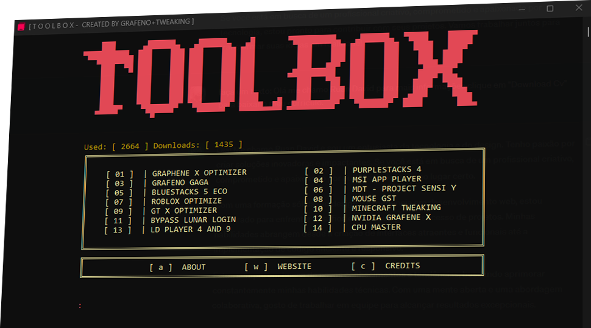

Olá! Me chamo Ruan David e sou um entusiasta da tecnologia e do design.
Para saber mais sobre minha experiência e habilidades, clique em "Download CV" abaixo e baixe o meu currículo. Estou animado para compartilhar meu trabalho e discutir como posso contribuir para o sucesso.
Download CV

O Toolbox Grafeno+Tweaking é uma ferramenta de armazenamento de projetos da Grafeno que utiliza a ferramenta Wget para fazer download de todos os projetos da Equipe diretamente de seus repositórios no GitHub. Com este software, é possível ter acesso fácil e rápido a todos os projetos da Grafeno, sem precisar perder tempo procurando por eles na internet.
Este é o meu projeto atual e estou empolgado para compartilhá-lo com você. Caso queira saber mais sobre todos os meus projetos, clique em "Saiba mais".

Saiba mais...